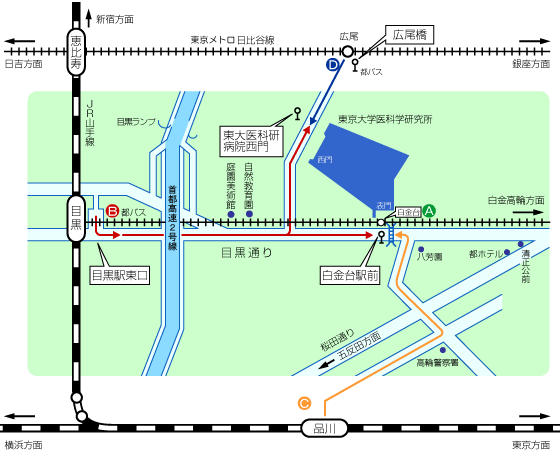
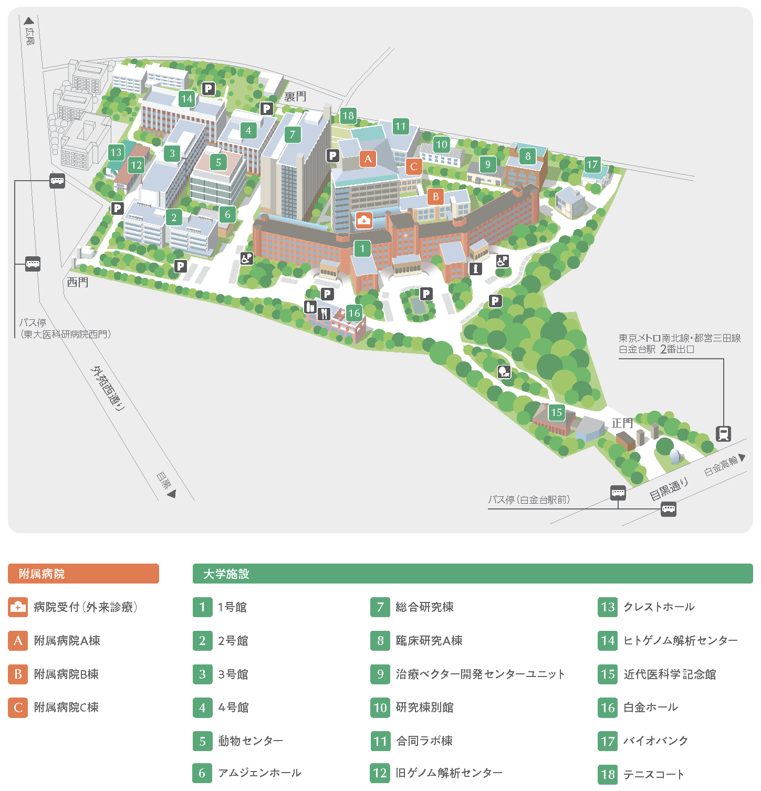

連絡先 / Contact Information
〒108-0071
東京都港区白金台4-6-1 1号館西棟3階330号室
東京大学医科学研究所 幹細胞治療研究センター 再生医学分野
Tel : 03-5449-5698
Email : saisei[at]ims.u-tokyo.ac.jp
※お問い合わせは、できる限りメールでお願いします。
当研究室での研究内容のページはこちら
交通案内 / Traffic Guide

A
東京メトロ南北線・都営地下鉄三田線白金台駅下車。
B
JR山手線目黒駅東口から徒歩15分。 JR山手線目黒駅東口から都バス品93大井競馬場行で、白金台駅前下車。あるいは、都バス黒77千駄ヶ谷行または橋86新橋駅行で、 東大医科研病院西門下車。
C
JR品川駅から都バス品93目黒駅行で、白金台駅前下車。
D
東京メトロ日比谷線広尾駅そばの都バス広尾橋から黒77または橋86目黒駅行で、 東大医科研病院西門下車。
所内建物配置図（キャンパスマップ） / Building Layout (Campus Map)
再生医学分野は、1の建物（1号館、西棟）の3階（330号室）です。
